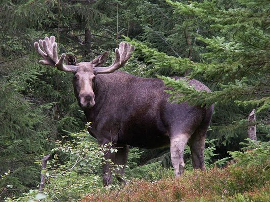
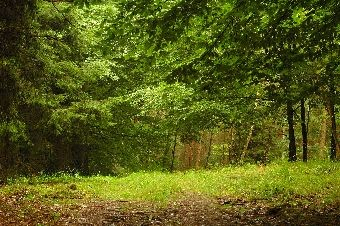

LASY LIŒCIASTEJest to biom po³o¿ony w strefie umiarkowanej, z udzia³em przede wszystkim drzew liœciastych, ale wystêpuja tu tak¿e bory mieszane. Charakterystyczne dla lasów mieszanych jest to, ¿e drzewa zrzucaj¹ liœcie na zimê. Wystêpuj¹ wyraŸne cztery pory roku. Klimat: temperatury poni¿ej 0°C w zimie i powy¿ej 12°C w lecie (wyraŸna sezonowoœæ), umiarkowany Roœlinnoœæ: buczyny (g³ównie buki), gr¹dy (lipy, graby, klony), ³êgi (olchy, wierzby, topole), olsy (olcha, jesion), bory mieszane (d¹b, sosna) Zwierzêta: lis, niedŸwiedŸ, jeleñ, ³oœ, ryœ, dzik, borsuk  |
 |